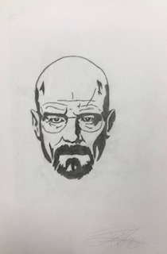
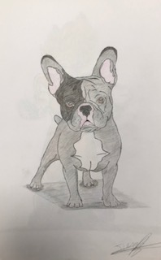
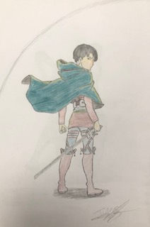
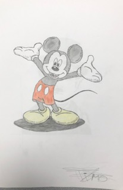
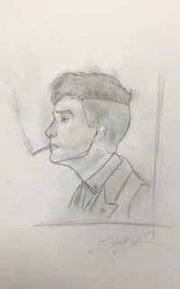
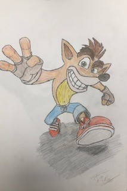
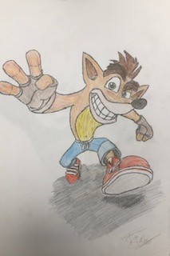

Bonjour je suis Timothé 😃
Je suis actuellement étudiant en troisième année, au sein du bachelor d'Audencia en spécialisation marketing, à Nantes🔰. D'une nature curieuse, je m'intéresse à de nombreuses activités que ce soit d'un point de vue professionnel ou bien, personnel. Ce site web à été créé dans le cadre d'un séminaire sur la culture numérique💻.
qui suis-jeMon école et ma formation👨🎓
Durant mes trois années au sein du bachelor in Management j'ai pu réaliser de nombreuses des expériences professionnelles et options. Elles m'ont permis de développer mon attrait pour le monde du marketing, qui est aujourd'hui, le domaine dans lequel je voudrais inscrire mon avenir professionnel.
Mon attrait pour la compétition🎾⚽️🏆
Pratiquant plusieurs activités sportives, j'ai un goût poussé pour la compétition et les nouveaux challenges.
Ma passion pour le dessin🎨
Ce qui était un passe temps durant mon adolescence, est devenu une véritable passion, qui m'accompagne dans de nombreuses réalisations professionnelles et personnelles. Un petit extrait de mes réalisations, ci-après.📸

 
